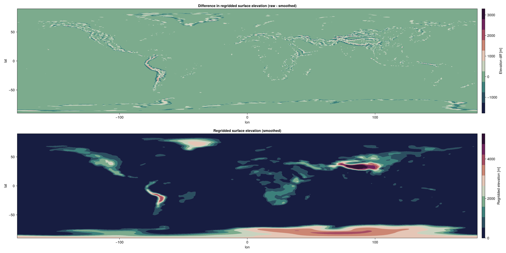

Topography in ClimaAtmos
Dataset source : https://www.ncei.noaa.gov/products/etopo-global-relief-model ClimaArtifact : https://github.com/CliMA/ClimaArtifacts/tree/main/earth_orography
We currently use the ClimaUtilities SpaceVaryingInput tool to regrid (using linear interpolation) the ETOPO2022 ice-surface elevation dataset (see ClimaArtifacts) onto the required spectral element horizontal grid. The file examples/topography_spectra.jl provides simple tools to generate such regridded fields (and their spectra) on user-defined horizontal spaces. For existing ClimaAtmos simulation data, users may access the orog.nc dataset from the default diagnostic outputs to visualize or examine this data. As an example, we include plots of the generated topography on a cubed sphere with 16 elements and 64 elements per panel edge, and compare instances of unsmoothed and smoothed datasets to visualize the effect of our topography smoothing methods.
- Elevation data (elems per panel = 16)

- Elevation data (elems per panel = 64)
